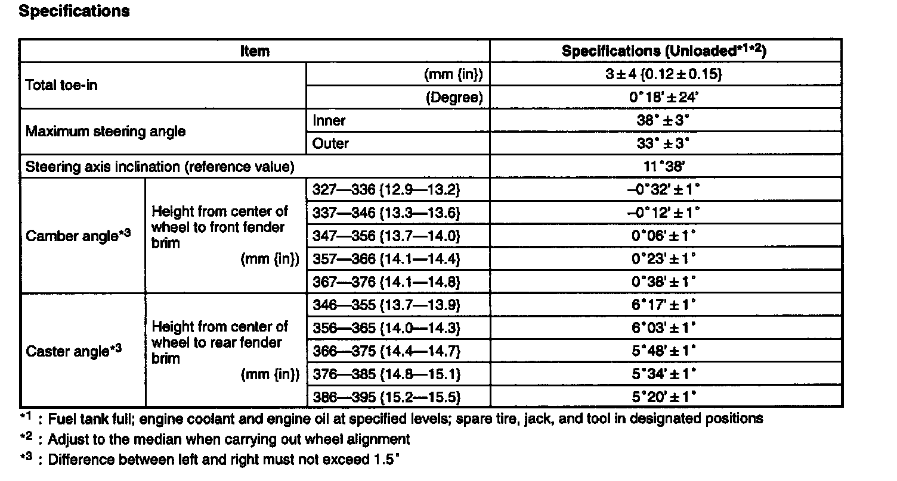
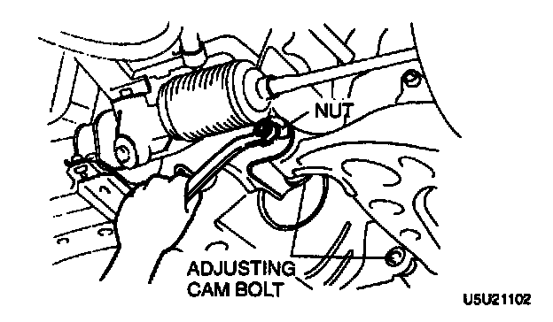
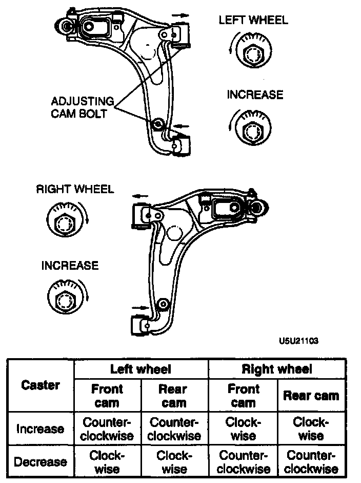
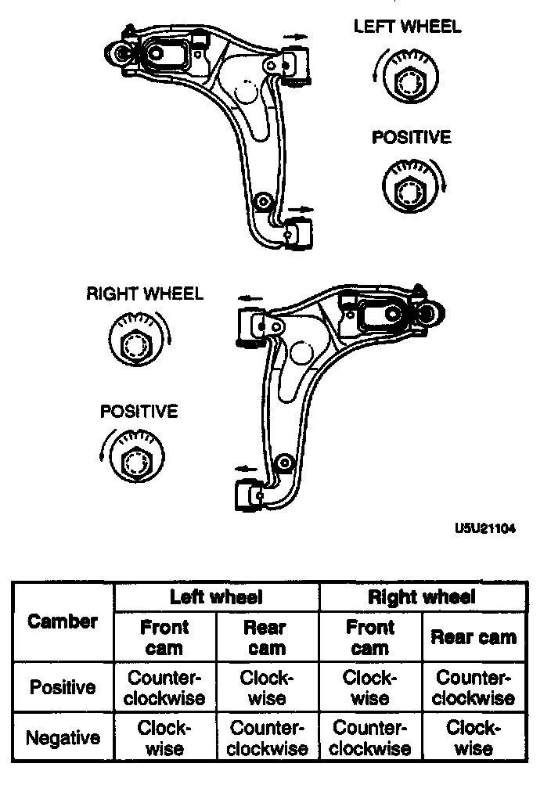

Front Wheel Alignment
FRONT WHEEL ALIGNMENT
Specification
MAXIMUM STEERING ANGLE ADJUSTMENT
1. Remove the steering gear boot clamp.
2. Loosen the tie rod locknut.
3. Turn the tie rod to provide the correct maximum steering angle.
4. After adjustment, tighten the locknut to the specified torque.
Tightening torque 350 Nm (3.5-5.1 kg-m, 26-36 ft. lbs.)
5. Adjust the toe-in.
6. Verify that the boot is not twisted, and install the boot clamp.
CASTER ADJUSTMENT
Caution:
- Adjust the caster before adjusting the camber.

1. Loosen the front and/or rear cam nuts.

2. Turn the front and/or rear adjusting cam bolts to provide the correct caster angle.
Note:
- Turning the front cam one graduation on the scale changes the caster angle about 25' and the camber about 29'. Turning the rear cam one graduation changes the caster angle about 25' and the camber about 2'.
3. Adjust the camber and the toe-in.
CAMBER ADJUSTMENT
Caution:
- Adjust the camber after adjusting the caster.
1. Loosen the front and rear cam nuts.

2. Turn the front and rear adjusting cam bolts the same amount in the opposite direction to provide the correct camber angle.
Note:
- Turning the front cam one graduation changes the camber about 29' and the caster about 25'. Turning the rear cam one graduation changes the camber about 2'andthe caster about 25'.
Note:
- If the cam cannot be turned far enough to make the adjustment, begin adjustment of the caster again using the other cam.
3. Tighten the nuts.
Tightening torque 94-112 Nm (9.5-11.5 kg-m, 69-83 ft. lbs.)
4. Adjust the toe-in.
TOTAL TOE-IN ADJUSTMENT
1. Remove the steering gear boot clamp.
2. Loosen the left and right tie rod locknuts, and turn the tie rods by the same amount.
3. Loosen the left and right tie rod locknuts and turn the tie rods equally. Both tie rods are right threaded, so turning the right tie rod toward the front of the vehicle and the left toward the rear increases toe-in.
Note:
- Turning both tie rods one complete turn changes toe-in by about 7 mm (0.28 inch).
4. Tighten the tie rod locknuts to the specified torque.
Tightening torque 35-50 Nm (3.5-5.1 kg-m, 26-36 ft. lbs.)
5. Verify that the boot is not twisted, and install the boot clamp.